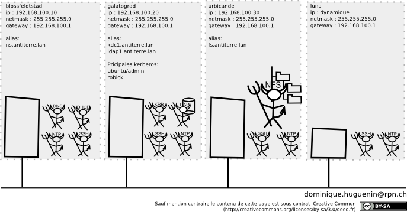

Service réseau - Serveur de fichiers
dominique huguenin (dominique.huguenin@rpn.ch) -Introduction

Network File System (ou NFS, système de fichiers en réseau) est un protocole développé par Sun Microsystems qui permet à un ordinateur d’accéder à des fichiers via un réseau. Il fait partie de la couche application du modèle OSI.
NFSv4
Inspirée de AFS la version 4 du protocole marque une rupture totale avec les versions précédentes. L’ensemble du protocole est repensé, et les codes sont réécrits. Il s’agit d’un système de fichier objet.
Imaginée pour répondre aux besoins d’Internet, NFSv4 intègre :
- Une gestion totale de la sécurité :
- négociation du niveau de sécurité entre le client et le serveur
- sécurisation simple, support de kerberos5, certificats SPKM et LIPKEY
- Chiffrement des communications possible (kerberos 5p par exemple)
- Support accru de la montée en charge :
- Réduction du trafic par groupement de requêtes (compound)
- Délégation (le client gère le fichier en local)
- Systèmes de maintenances simplifiés :
- Migration : le serveur NFS est migré de la machine A vers la machine B de manière transparente pour le client
- Réplication : le serveur A est répliqué sur la machine B
- Reprise sur incidents
- La gestion de la reprise sur incident est intégrée du côté client et du côté serveur.
- Compatibilité :
- NFSv4 peut être utilisée sous Unix et maintenant également sous MS-Windows
- Support de plusieurs protocoles de transports (TCP, RDMA)
tiré de [9]
Au préalable
Configuration du DNS
- Ajout de l’alias fs.antiterre.lan
$ sudo vim /etc/bind/db.antiterre.lan
...
urbicande IN A 192.168.100.30
fs IN CNAME urbicande
...
- redémarrer le service
sudo service bind9 restart
Configuration de service NFS
- Configuration du serveur de fichier NFSv4 et d’un client
- Configuration du serveur de fichier NFSv4 avec authentification Kerberos